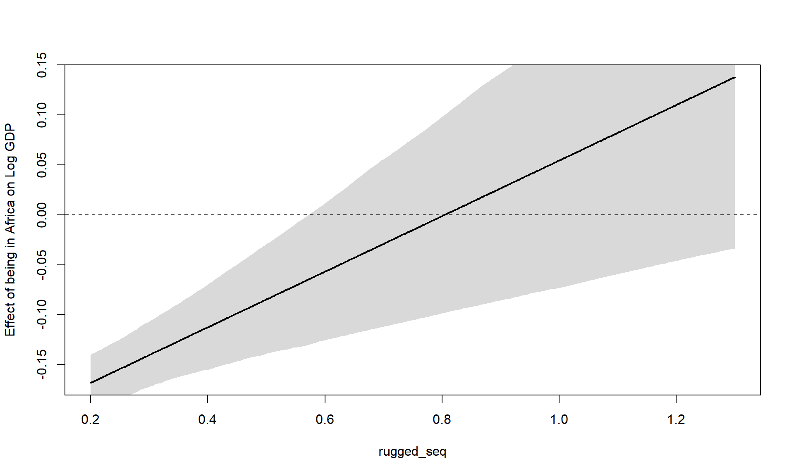

Code
library(rethinking)
library(dagitty)
library(tidyverse)library(rethinking)
library(dagitty)
library(tidyverse)We need a model that can predict log GDP conditional on ruggedness and African nation. We could split the data between African and non-African nation, but this is bad because
cont_africa variableLet’s load in the data:
data(rugged)
d <- rugged
d$log_gdp <- log(d$rgdppc_2000)
dd <- d[!is.na(d$rgdppc_2000),]
dd$log_gdp_std <- dd$log_gdp / mean(dd$log_gdp)
dd$rugged_std <- dd$rugged / max(dd$rugged)We are dividing ruggedness by the max since we want to preserve the meaning of a zero ruggedness score. We divide log_gdp by the mean since we want a variable that gives us some indication of variance to the international average. That is, a 0.8 is 80% of the national average (80% of the international log GDP average).
Let’s create a simple model with reasonable priors:
m8.1 <- quap(alist(
log_gdp_std ~ dnorm(mu, sigma),
mu <- a + b*(rugged_std - 0.215), # The mean is 0.215
a ~ dnorm(1,1),
b ~ dnorm(0,1),
sigma ~ dexp(1)
), data=dd)Let’s look at the prior predictive checks:
set.seed(7)
prior <- extract.prior(m8.1)
plot(NULL, xlim=c(0,1), ylim=c(0.5,1.5), xlab='ruggedness', ylab='Log GDP')
abline(h=min(dd$log_gdp_std), lty=2)
abline(h=max(dd$log_gdp_std), lty=2)
# draw 51 lines
rugged_seq <- seq(-0.1, 1.1, length.out=30)
mu <- link(m8.1, post=prior, data=data.frame(rugged_std=rugged_seq))
for (i in 1:50) lines(rugged_seq, mu[i,], col=col.alpha('black', 0.3))So clearly we need to constrain \(\alpha\) and \(\beta\) better. Notice that for \(\beta\), if we drew a line from the point (min rugged, max GDP) to (max rugged, min GDP), we would have a slope of around 0.6. That is the extreme, we need to be way tighter than that.
m8.1 <- quap(alist(
log_gdp_std ~ dnorm(mu, sigma),
mu <- a + b*(rugged_std - 0.215), # The mean is 0.215
a ~ dnorm(1,0.1),
b ~ dnorm(0,0.3),
sigma ~ dexp(1)
), data=dd)
precis(m8.1) mean sd 5.5% 94.5%
a 0.999999515 0.010411972 0.9833592 1.01663986
b 0.001990935 0.054793464 -0.0855796 0.08956147
sigma 0.136497402 0.007396152 0.1246769 0.14831788Hmm, no real association between ruggedness and GDP.
Now let’s talk about bringing Africa into the model. We could do an indicator variable where the equation looks something like: \[\mu_i = \alpha + \beta (r_i - \bar{r}) + \gamma A_i\] But this is flawed. This will tell the model that their is more uncertainty when Africa is present (\(A_i = 1\)). One way around this is to create two separate intercepts:
\[\mu_i = \alpha_{\text{CID}[i]} + \beta (r_i - \bar{r})\]
Where \(\text{CID}\) is the continent index.
Not sure I totally understand what he is saying here since the uncertainty should be the same as the models are equivalent. It makes sense for a continent with less data to be hard to predict and thus have a larger interval.
I kinda see what he is saying since the \(\gamma\) term is bascially the additional uncertainty from knowning that we are in Africa, but because there is correlation in the intercept and \(\gamma\) paramter, the actual predictions don’t have any differences in uncertainty intervals. But I could see how it would be harder to reason about priors.
dd$cid <- ifelse(dd$cont_africa == 1, 1, 2) # 1 if Africa
# Lower unct for when af
fit <- lm(log_gdp_std ~ rugged_std + cont_africa, data=dd)
fit |> predict(newdata=data.frame(rugged_std = rep(0.2,2), cont_africa=c(1,0)), interval='conf') %>% as.data.frame() %>%
mutate(diff = upr - lwr) fit lwr upr diff
1 0.8779832 0.8459359 0.9100306 0.06409473
2 1.0504352 1.0298976 1.0709727 0.04107506fit1 <- lm(log_gdp_std ~ rugged_std + as.factor(cid) - 1, data=dd)
fit1 |> predict(newdata=data.frame(rugged_std = rep(0.2,2), cid=c(1,2)), interval='conf') %>% as.data.frame() %>%
mutate(diff = upr - lwr) fit lwr upr diff
1 0.8779832 0.8459359 0.9100306 0.06409473
2 1.0504352 1.0298976 1.0709727 0.04107506vcov(fit) |> cov2cor() (Intercept) rugged_std cont_africa
(Intercept) 1.0000000 -0.7204085 -0.4574937
rugged_std -0.7204085 1.0000000 0.1220522
cont_africa -0.4574937 0.1220522 1.0000000vcov(fit1) |> cov2cor() rugged_std as.factor(cid)1 as.factor(cid)2
rugged_std 1.0000000 -0.4580244 -0.7204085
as.factor(cid)1 -0.4580244 1.0000000 0.3299647
as.factor(cid)2 -0.7204085 0.3299647 1.0000000Now that we have that little soap box put away, let’s fit the model using indexes:
m8.2 <- quap(alist(
log_gdp_std <- dnorm(mu, sigma),
mu <- a[cid] + b * (rugged_std - 0.215),
a[cid] ~ dnorm(1, 0.1),
b ~ dnorm(0, 0.3),
sigma ~ dexp(1)
), data=dd)
compare(m8.1, m8.2) WAIC SE dWAIC dSE pWAIC weight
m8.2 -252.2694 15.30363 0.00000 NA 4.258180 1.000000e+00
m8.1 -188.7489 13.29716 63.52044 15.14767 2.693351 1.609579e-14precis(m8.2, depth=2) mean sd 5.5% 94.5%
a[1] 0.88041699 0.015937691 0.8549455 0.9058885
a[2] 1.04915863 0.010185998 1.0328794 1.0654378
b -0.04651242 0.045688674 -0.1195318 0.0265069
sigma 0.11239229 0.006091743 0.1026565 0.1221281Nice, looks like that helped. Let’s see what the posterior difference is between the two intercepts:
post <- extract.samples(m8.2)
PI(post$a[,1] - post$a[,2]) 5% 94%
-0.1990056 -0.1378378 Okay, let’s now build a model that accounts for the interaction in the slope too. Essentially allowing for the slope to vary for African and Non-African nations:
m8.3 <- quap(alist(
log_gdp_std <- dnorm(mu, sigma),
mu <- a[cid] + b[cid] * (rugged_std - 0.215),
a[cid] ~ dnorm(1, 0.1),
b[cid] ~ dnorm(0, 0.3),
sigma ~ dexp(1)
), data=dd)
precis(m8.3, depth=2) mean sd 5.5% 94.5%
a[1] 0.8865638 0.015674871 0.86151229 0.9116152
a[2] 1.0505700 0.009936076 1.03469020 1.0664497
b[1] 0.1325053 0.074200688 0.01391832 0.2510924
b[2] -0.1425764 0.054746548 -0.23007191 -0.0550808
sigma 0.1094882 0.005934499 0.10000374 0.1189727Let’s see if model comparison got any better:
compare(m8.3, m8.2, m8.1, func=PSIS) PSIS SE dPSIS dSE pPSIS weight
m8.3 -259.0953 15.18028 0.000000 NA 5.160457 9.729596e-01
m8.2 -251.9293 15.31455 7.166018 6.637029 4.381704 2.704045e-02
m8.1 -188.6208 13.42930 70.474472 15.511919 2.754712 4.839021e-16So a bit better, but we see that the standard error of the difference is almost the same as the difference itself. Let’s plot the \(\hat{k}\) values from PSIS:
plot(PSIS(m8.3, pointwise=T)$k)Some Pareto k values are high (>0.5). Set pointwise=TRUE to inspect individual points.Some influential points, but honestly probs not that bad if they are less than 0.7.
Let’s go ahead and plot the interaction:
par(mfrow=c(1,2))
d.A1 <- dd[dd$cid==1, ]
plot(d.A1$rugged_std, d.A1$log_gdp_std, pch=16, col=rangi2,
xlim=c(0,1), main='Afrcian Nations')
mu <- link(m8.3, data=data.frame(cid=1, rugged_std=rugged_seq))
mu_mean <- colMeans(mu)
mu_ci <- mu |> apply(2, PI, prob=0.97)
lines(rugged_seq, mu_mean, lwd=2)
shade(mu_ci, rugged_seq, col=col.alpha(rangi2, 0.3))
d.A0 <- dd[dd$cid==2, ]
plot(d.A0$rugged_std, d.A0$log_gdp_std, pch=16, col=rangi2,
xlim=c(0,1), main='Non-African Nations')
mu <- link(m8.3, data=data.frame(cid=2, rugged_std=rugged_seq))
mu_mean <- colMeans(mu)
mu_ci <- mu |> apply(2, PI, prob=0.97)
lines(rugged_seq, mu_mean, lwd=2)
shade(mu_ci, rugged_seq, col=col.alpha(rangi2, 0.3))Notice that it is equivalent to write the following for our interaction model that allows intercept and slope to vary with Africa:
\[\mu_i = (2-\text{CID})(\alpha_1 + \beta_1(r_i - \bar{r})) + (\text{CID} - 1)(\alpha_2 + \beta_2(r_i - \bar{r}))\]
Let’s think about a question we might pose: Given some ruggedness value, what is the difference in log GDP (positive or negative) if we are in Africa:
rugged_seq <- seq(0.2, 1.3, length.out=300)
muA <- link(m8.3, data=data.frame(cid=1, rugged_std=rugged_seq))
muN <- link(m8.3, data=data.frame(cid=2, rugged_std=rugged_seq))
delta <- muA - muN
plot(rugged_seq, colMeans(delta), type='l', lwd=2, ylab='Effect of being in Africa on Log GDP')
delta |> apply(2,PI) |> shade(rugged_seq)
abline(h=0, lty=2)
This is interesting, it is showing that for rugged values greater than 0.8, being in Africa actually means that we would expect to have a higher log GDP than if we were in a non-African country.
Notice the dichotomy here. It is simultaneously true that: - The influence of ruggedness depends upon continent (different slopes for each continent) - The influence of continent depends on ruggedness (graph above)
For this we are going to be looking at tulips:
data(tulips)
d <- tulipsWe are going to be predicting blooms based on water and shade. The first model will consist of only main effects. Let’s standardize the variables:
d$blooms_std <- d$blooms / max(d$blooms)
d$water_cent <- d$water - mean(d$water)
d$shade_cent <- d$shade - mean(d$shade)Refer to the text for a more thorough walkthrough of how we got to the priors. But we basically want to make sure that the intercept can’t really exceed 0 and 1, and that the slopes could theoretically span the full range of the data if they need to. That is, since water_cent varies from -1 to 1 (2 unit diff), a slope of 0.5 would let us go the full 0 to 1 range if we need to (and the intercept was appropriate).
m8.4 <- quap(alist(
blooms_std ~ dnorm(mu, sigma),
mu <- a + bw*water_cent + bs*shade_cent,
a ~ dnorm(0.5,0.25),
bw ~ dnorm(0, 0.25),
bs ~ dnorm(0, 0.25),
sigma ~ dexp(1)
), data=d)Now, let’s talk about interaction effects. We may write the model as:
\[\begin{align} \mu_i &= \alpha + \gamma_{W,i}W_i + \beta_S S_i\\ \gamma_{W,i} &= \beta_W + \beta_{WS}S_i \end{align}\]
The reason we do this is we want the effect of water to depend on itself, but also the level of shade. If we distribute we of course get the usual two-way interaction:
\[\mu_i = \alpha + \beta_W W_i + \beta_S S_i + \beta_{WS} S_i W_i\]
How do we set priors on the interaction? Consider the case where the interaction sets the effect of Water to zero when shade is at its max:
\[\gamma_{W,i} = \beta_W + \beta_{WS}S_i = 0\]
This implies that \(\beta_{WS} = -\beta_W\). That would be the largest concievable interaction. Thus we are probably okay using the same prior:
m8.5 <- quap(alist(
blooms_std ~ dnorm(mu, sigma),
mu <- a + bw*water_cent + bs*shade_cent + bws*shade_cent*water_cent,
a ~ dnorm(0.5,0.25),
bw ~ dnorm(0, 0.25),
bs ~ dnorm(0, 0.25),
bws ~ dnorm(0, 0.25),
sigma ~ dexp(1)
), data=d)We are going to make a triptych. Basically a plot that show the bivariate relationship between two params, but varies a third by keeping it constant within a given plot, but varying it when showing all plots.
Let’s make a regression equation where the bloom size would be restricted to zero when the temperature is to hot.
We can make the bayesian model bend to our whim where. Let \(\mu_i\) be the simple linear model that we might have built previously. Now, let \(\mu_i^\prime=\mu_i(1-H_i)\) where \(H_i\) is an indicator variable if it is too hot or not. That is, if \(H_i\), we have effectively forced \(\mu_i^\prime\) to be 0.
Let’s redo the tulip analysis, but this time assume that the effect of water is positive and the effect of shade is negative.
I’m sure there is a more clever way to do this, but I am just going to use a uniform distribution that imposes positive and negative constraints.
m8.5_2 <- quap(alist(
blooms_std ~ dnorm(mu, sigma),
mu <- a + bw*water_cent + bs*shade_cent + bws*shade_cent*water_cent,
a ~ dnorm(0.5,0.25),
bw ~ dunif(0, 0.3),
bs ~ dunif(-0.3, 0),
bws ~ dnorm(0, 0.25),
sigma ~ dexp(1)
), data=d)
prior_1 <- extract.prior(m8.5)
prior_2 <- extract.prior(m8.5_2)
par(mfrow=c(1,3))
for (s in -1:1){
idx <- which(d$shade_cent==s)
plot(d$water_cent[idx], d$blooms_std[idx], xlim=c(-1,1), ylim=c(0,1),
xlab='Water', ylab='Blooms', pch=16, col=rangi2, main=paste0('Shade: ', s))
mu <- link(m8.5, data=data.frame(shade_cent=s, water_cent=-1:1), post=prior_1)
for (i in 1:20) lines(-1:1, mu[i,], col=col.alpha('black', 0.3))
}par(mfrow=c(1,3))
for (s in -1:1){
idx <- which(d$shade_cent==s)
plot(d$water_cent[idx], d$blooms_std[idx], xlim=c(-1,1), ylim=c(0,1),
xlab='Water', ylab='Blooms', pch=16, col=rangi2, main=paste0('Shade: ', s))
mu <- link(m8.5_2, data=data.frame(shade_cent=s, water_cent=-1:1), post=prior_2)
for (i in 1:20) lines(-1:1, mu[i,], col=col.alpha('black', 0.3))
}
Let’s look back again at m8.3 which predicted log GDP from ruggedness.
Looking at the WAIC and PSIS, let’s see which observations are quite influential. Recall that we will be using the penalty from WAIC which is the “effective number of parameters” or “overfitting penalty”. We hope to see it quite low as the sum of all points penalties equals to effective number of parameters.
WAIC_m8.3 <- WAIC(m8.3, pointwise=T)
PSIS_m8.3 <- PSIS(m8.3, pointwise=T)Some Pareto k values are high (>0.5). Set pointwise=TRUE to inspect individual points.plot(PSIS_m8.3$k, WAIC_m8.3$penalty, xlab='PSIS K hat', ylab='WAIC penalty', col=rangi2, pch=16)Looks like there are a couple of outliers:
dd_pen <- dd %>% mutate(WAIC_pen=WAIC_m8.3$penalty, PSIS_k = PSIS_m8.3$k)
dd_pen %>% filter(PSIS_k > 0.3) %>% select(country, cont_africa, WAIC_pen, PSIS_k) country cont_africa WAIC_pen PSIS_k
1 Equatorial Guinea 1 0.2075328 0.3195809
2 Lesotho 1 0.2855842 0.5082205
3 Seychelles 1 0.5857502 0.3163836Let’s plot the points in black on the model graph:
par(mfrow=c(1,2))
d.A1 <- dd[dd$cid==1, ]
plot(d.A1$rugged_std, d.A1$log_gdp_std, pch=16, col=ifelse(dd_pen[dd$cid==1,]$PSIS_k > 0.3, 'black', 'lightgrey'),
xlim=c(0,1), main='Afrcian Nations')
mu <- link(m8.3, data=data.frame(cid=1, rugged_std=rugged_seq))
mu_mean <- colMeans(mu)
mu_ci <- mu |> apply(2, PI, prob=0.97)
lines(rugged_seq, mu_mean, lwd=2)
shade(mu_ci, rugged_seq, col=col.alpha(rangi2, 0.3))
d.A0 <- dd[dd$cid==2, ]
plot(d.A0$rugged_std, d.A0$log_gdp_std, pch=16, col=ifelse(dd_pen[dd$cid==2,]$PSIS_k > 0.3, 'black', 'lightgrey'),
xlim=c(0,1), main='Non-African Nations')
mu <- link(m8.3, data=data.frame(cid=2, rugged_std=rugged_seq))
mu_mean <- colMeans(mu)
mu_ci <- mu |> apply(2, PI, prob=0.97)
lines(rugged_seq, mu_mean, lwd=2)
shade(mu_ci, rugged_seq, col=col.alpha(rangi2, 0.3))It is clear that these points are quite far from the usual cluster and therefore the model is unsure about their real influence and weights them accordingly.
Let’s now use a student-t instead to model the noise around the mean.
m8.3_2 <- quap(alist(
log_gdp_std <- dstudent(2, mu, sigma),
mu <- a[cid] + b[cid] * (rugged_std - 0.215),
a[cid] ~ dnorm(1, 0.1),
b[cid] ~ dnorm(0, 0.3),
sigma ~ dexp(1)
), data=dd)
compare(m8.3_2, m8.3, func=PSIS)Some Pareto k values are high (>0.5). Set pointwise=TRUE to inspect individual points. PSIS SE dPSIS dSE pPSIS weight
m8.3 -258.9829 15.17987 0.00000 NA 5.230575 1.000000e+00
m8.3_2 -221.9239 17.98613 37.05896 5.835448 5.665405 8.969125e-09It looks like model m8.3 might have actually performed better, but let’s see if we got rid of those pesky \(\hat{k}\) warnings:
WAIC_m8.3_2 <- WAIC(m8.3_2, pointwise=T)
PSIS_m8.3_2 <- PSIS(m8.3_2, pointwise=T)
plot(PSIS_m8.3_2$k, WAIC_m8.3_2$penalty, xlab='PSIS K hat', ylab='WAIC penalty', col=rangi2, pch=16)Yup! Looks much better… although 0.5 really isn’t that bad. Guidance now says that we should raise the alarm bells when we are more than 0.7 away.
Let’s look at a dataset of wine ratings, but judge and Wine type. We are going to construct some indexes for jude and wine, as well as standardize the score from 0 to 1.
data("Wines2012")
dw <- Wines2012
dw$j_idx <- dw$judge |> as.factor() |> as.integer()
dw$wine_idx <- dw$wine |> as.factor() |> as.integer()
dw$score_std <- dw$score / max(dw$score)For priors, If we assume that the average rating is a 0.5, a judge should be able to be quite picking (usually rating of 0, therefore param = -0.5), to quite relaxed (param 0.5). The same for the wine as well:
m8.w <- quap(alist(
score_std ~ dnorm(mu, sigma),
mu <- j[j_idx] + w[wine_idx],
j[j_idx] ~ dnorm(0,0.5),
w[wine_idx] ~ dnorm(0.5),
sigma ~ dexp(1)
), data=dw)plot(coeftab(m8.w), pars=paste0('j[', 1:8, ']'))plot(coeftab(m8.w), pars=paste0('w[', 1:20, ']'))Lets see what wine as the lowest rating based on score alone:
dw %>% group_by(wine) %>% summarise(m=mean(score)) %>% arrange(m) %>% head()# A tibble: 6 × 2
wine m
<fct> <dbl>
1 I2 11.7
2 C2 13.1
3 H1 13.6
4 H2 13.6
5 J1 13.7
6 I1 13.8Looks like I2 has the lowest rating, but what if we account for judges:
dw$wine[(dw$wine_idx == 18) |> which()] |> head(1)[1] I2
Levels: A1 A2 B1 B2 C1 C2 D1 D2 E1 E2 F1 F2 G1 G2 H1 H2 I1 I2 J1 J2Still the lowest.
Let’s do the same for judges:
dw %>% group_by(judge) %>% summarise(m=mean(score)) %>% arrange(m) %>% head()# A tibble: 6 × 2
judge m
<fct> <dbl>
1 Robert Hodgson 12.2
2 Jean-M Cardebat 12.6
3 Tyler Colman 13.2
4 Daniele Meulder 13.4
5 Olivier Gergaud 14.6
6 Jamal Rayyis 14.8dw$judge[(dw$j_idx == 8) |> which()] |> head(1)[1] Robert Hodgson
9 Levels: Daniele Meulder Francis Schott Jamal Rayyis ... Tyler ColmanYeah, its about the same as what we get with the raw data. Shame, would have been cool if there was some confounding effect.